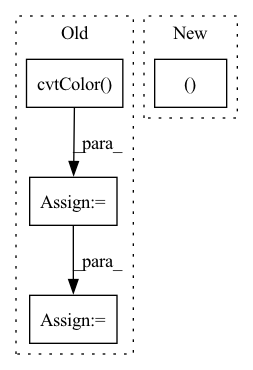

Pattern ID :35729

Before Change
Returns:
image = cv2.cvtColor(image, cv2.COLOR_RGB2BGR)
image = torch.from_numpy((image / 255).transpose(2, 0, 1)).unsqueeze(0).float()
if prev_mask is None:
mask = torch.zeros_like(image[:, :1, :, :])
else:
logger.info("InteractiveSeg run with prev_mask")
mask = torch.from_numpy(prev_mask / 255).unsqueeze(0).unsqueeze(0).float()
pred_probs = self.predictor(image, clicks, mask)
pred_mask = pred_probs > 0.5
pred_mask = (pred_mask * 255).astype(np.uint8)
// Find largest contour
// pred_mask = only_keep_largest_contour(pred_mask)
// To simplify frontend process, add mask brush color here
fg = pred_mask == 255
bg = pred_mask != 255
pred_mask = cv2.cvtColor(pred_mask, cv2.COLOR_GRAY2BGRA)
// frontend brush color "ffcc00bb"
pred_mask[bg] = 0
pred_mask[fg] = [255, 203, 0, int(255 * 0.73)]
After Change
self.prev_img_md5 = img_md5
self.predictor.set_image(rgb_np_img)
masks, scores, _ = self.predictor.predict(
point_coords=np.array(input_point),
point_labels=np.array(input_label),
multimask_output=False,
In pattern: SUPERPATTERN
Frequency: 3
Non-data size: 4
Instances
Fragment ID: 101627086
Project Name: sanster/lama-cleaner
Commit Name: a6aec566d963e67c17c0871dca1c89d26e1cdcaa
Time: 2023-04-06
Author: cwq1913@gmail.com
File Name: lama_cleaner/plugins/interactive_seg.py
M Class Name: InteractiveSeg
N Class Name: InteractiveSeg
M Method Name: forward(4)
N Method Name: forward(4)
M Parent Class: BasePlugin
N Parent Class: BasePlugin
M File Name: lama_cleaner/plugins/interactive_seg.py
N File Name: lama_cleaner/plugins/interactive_seg.py
M Start Line: 242
M End Line: 264
N Start Line: 48
N End Line: 75
'>
Before Change
// Image
t1 = time_sync()
im = cv2.cvtColor(cv2.imread(file), cv2.COLOR_BGR2RGB)
im = transforms(im).unsqueeze(0).to(device)
im = im.half() if model.fp16 else im.float()
t2 = time_sync()
dt[0] += t2 - t1
After Change
):
source = str(source)
is_file = Path(source).suffix[1:] in (IMG_FORMATS + VID_FORMATS)
is_url = source.lower().startswith(("rtsp://", "rtmp://", "http://", "https://"))
if is_url and is_file:
source = check_file(source) // download
'>
Fragment ID: 101627119
Project Name: ultralytics/yolov5
Commit Name: 64e0757edffc6b2e927e16c8e2aa26439aceb4ce
Time: 2022-08-17
Author: ayush.chaurarsia@gmail.com
File Name: classify/predict.py
M Class Name: AnonimousClass
N Class Name: AnonimousClass
M Method Name: run(9)
N Method Name: run(10)
M Parent Class:
N Parent Class:
M File Name: classify/predict.py
N File Name: classify/predict.py
M Start Line: 38
M End Line: 82
N Start Line: 41
N End Line: 81
'>
Before Change
def prepare_input(image, input_shape):
input_height, input_width = input_shape
input_img = cv2.cvtColor(image, cv2.COLOR_BGR2RGB)
// Resize input image
input_img = cv2.resize(input_img, (input_width, input_height))
// Scale input pixel values to 0 to 1
input_img = input_img / 255.0
input_img = input_img.transpose(2, 0, 1)
input_tensor = input_img[np.newaxis, :, :, :].astype(np.float32)
After Change
def prepare_input(image, input_shape, stride, pt):
input_tensor = LetterBox(input_shape, auto=pt, stride=stride)(image=image)
input_tensor = input_tensor.transpose((2, 0, 1))[::-1] // HWC to CHW, BGR to RGB
input_tensor = np.ascontiguousarray(input_tensor).astype(np.float32) // contiguous
input_tensor /= 255.0 // 0 - 255 to 0.0 - 1.0
input_tensor = input_tensor[None].astype(np.float32)
'>
Fragment ID: 101627079
Project Name: augmentedstartups/as-one
Commit Name: 37de4fbaee82f479c5ca8d53a2450c7083056ef1
Time: 2023-01-16
Author: umair.imran@axcelerate.ai
File Name: asone/detectors/yolov8/utils/yolov8_utils.py
M Class Name: AnonimousClass
N Class Name: AnonimousClass
M Method Name: prepare_input(4)
N Method Name: prepare_input(2)
M Parent Class:
N Parent Class:
M File Name: asone/detectors/yolov8/utils/yolov8_utils.py
N File Name: asone/detectors/yolov8/utils/yolov8_utils.py
M Start Line: 7
M End Line: 15
N Start Line: 7
N End Line: 12